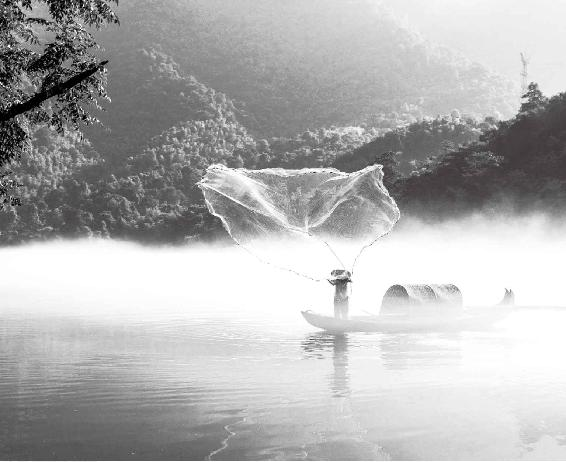

我们都知道，越往南方越热。这是太阳对它的眷顾，日照时间较长。
但是南方有一个缺点，地势低下。我们现在说的南方都是长江冲积形成的平原，地势比较低，这会出现什么问题呢？就是湿气比较重。越往高越爽，但是越往下，越容易出现湿气。
另外，南方还有一个特点，水土弱。水土弱对应的是什么？水土刚强。西方就是水土刚强，水的碱性大，水含的矿物质多，洗衣服不干净，或者说肥皂、洗衣粉消耗的量大。而到了南方，水质比较软，洗衣服特别干净。而且，南方这种软水对人也特别滋养，所以这里人的皮肤就显得水嫩、光滑，江南的美女都比较水灵。
经文：
南方者，天地所长养，阳之所盛处也。其地下，水土弱，雾露之所聚也。其民嗜酸而食胕，故其民皆致理而赤色，其病挛痹，其治宜微针。故九针者，亦从南方来。
南方的阳气旺，湿气重
梁冬：好了，咱们接着说。今天讲“南方者”，“南方者，天地所长养，阳之所盛处也”，这有什么含义？
徐文兵：先说一下南方的方位。在《黄帝内经》成书的年代，南方没有到达现在海边的广东、福建，它是指的吴越，就是江苏、湖南、湖北这一带。
生、长、收、藏，东方是天地之所生，南方是天地之所长（zhǎng）养，就是植物疯狂地生长。南方就是这么一个地界儿，阳气特别旺盛，就像纯阳之体的小孩子一样，长得非常快，长得非常猛，所以《黄帝内经》说它是“阳之所盛处也”。
生、长、收、藏，东方是天地之所生，南方是天地之所长养，就是植物疯狂地生长。
梁冬：后面有句话“其地下，水土弱，雾露之所聚也”，这说的是什么？
徐文兵：这是说天气对南方的影响。我们都知道，越往南方越热。这是太阳对它的眷顾，日照时间较长。
但是南方有一个缺点，地势低下。我们现在说的南方都是长江冲积形成的平原，地势比较低，这会出现什么问题呢？就是湿气比较重。越往高越爽，但是越往下，越容易出现湿气。
我们现在说的南方都是长江冲积形成的平原，地势比较低，这会出现什么问题呢？
另外，南方还有一个特点，水土弱。水土弱对应的是什么？水土刚强。西方就是水土刚强，水的碱性大，水含的矿物质多，洗衣服不干净，或者说肥皂、洗衣粉消耗的量大。而到了南方，水质比较软，洗衣服特别干净。而且，南方这种软水对人也特别滋养，所以这里人的皮肤就显得水嫩、光滑，你看江南的美女都比较水灵。
西方就是水土刚强，水的碱性大，水含的矿物质多，洗衣服不干净，或者说肥皂、洗衣粉消耗的量大。而到了南方，水质比较软，洗衣服特别干净。
我自己的体会也是这样。山西地势比较高，水土也比较硬，到了北京以后，自来水的水质比较软，人的气色、肤色都随之在变。从北方再到江南，我发现那儿的水更软、更弱，所以叫“其地下，水土弱”。

南方气候潮湿，常年弥漫的雾气是导致人患病的因素之一。
为什么北方人去南方会水土不服
梁冬：刚才有句话叫“雾露之所聚也”，为什么会“雾露之所聚”呢？
徐文兵：湿气大！你看云形成了积雨、雾以后，它都是往下飘的，包括舞台上用的干冰。干冰打起来的雾绝对不会往上飘，而是往下走。所以，南方不好的一点在哪儿？多水、多沼泽、多湖泊，阳光把水变成水蒸气蒸腾起来，成了云雾。但这些云雾不会往上飘，它们全笼罩在土地或者城市的上空，所以，南方最难过的就是梅雨季节。
南方不好的一点在哪儿？多水、多沼泽、多湖泊，阳光把水变成水蒸气蒸腾起来，成了云雾。但这些云雾不会往上飘，它们全笼罩在土地或者城市的上空，所以，南方最难过的就是梅雨季节。
我最喜欢南方的饮食，也喜欢南方保存下来的中国传统文化，但我受不了南方的湿气。一到梅雨季节，洗衣服挂出去晾不干，放在屋里的箱子都长霉。而且，身上也特不舒服。咱在北方出点汗，一会儿就干了，爽了！在南方出点汗，全都湿答答地黏在身上。
梁冬：就像“湿答答的玫瑰”。
徐文兵：《黄帝内经》上说南方是“雾露之所聚也”，这种雾露就是中医所说“风寒暑湿燥火”里的“湿”。南方这种天时和地利，容易出现与之相关的一些疾病。
南方湖泊虽多，但水质不好
徐文兵：南方湖泊比较多，所以在南方打井不用打很深，挖个坑就能冒水。1998年不是发洪水嘛，抢救大坝时出现了管涌。什么叫“管涌”？就是河水奔流、冲击让大坝的泥土出现漏管，一下冒出个小喷泉。这种水的特点是自洁能力特别差。在北方，我们打一个深水井，水都是经过岩石、砂砾、土层慢慢过滤再渗透出来的，所以，最后打出来的是清水。
南方湖泊比较多，所以在南方打井不用打很深，挖个坑就能冒水。
而管涌出来的水，没有经过很好的过滤，里边有很多微生物，还有一些乱七八糟的东西。喝这种水身体最容易闹病，如果一定要喝，除了澄清之外，还必须得烧开。很多北方人到了南方，水土不服，上吐下泻，主要就是喝生水喝的。
很多北方人到了南方，水土不服，上吐下泻，主要就是喝生水喝的。
曹操八十万大军攻打东吴，三国演义中说是火烧赤壁战败，其实是北方人到了南方以后，不服水土，瘟疫流行造成的。
水土不服，待一星期就服了
徐文兵：上周，我抽空去了一趟上海看朋友。我有一个感觉，上海的水不好喝。
梁冬：为什么呢？
徐文兵：“君住长江头，我住长江尾，日日思君不见君，共饮一江水。”但是，诗中所说的水是长江源头的水。而上海是黄浦江跟长江的入海口，那里的水处于下游。
梁冬：上海人会喝自来水么？我觉得他们应该也是买矿泉水来喝吧。
徐文兵：对啊，刚开始我没注意，宾馆里提供的矿泉水用完了，我就接自来水烧开了沏茶。我的茶是非常好的茶，可沏出来的茶水有一股浓浓的漂白粉的味道，可见，水里面用来过滤杀毒的氯放得太多。
后来，我见到上海朋友就提起了这件事，他们说，没办法，我们这是下游。在喝水这件事上，上海人民真不容易。
上次我们讲南方的时候提到，最好的水是泉水。所谓泉水，就是带气从地下冒出来的水。它本身经过了很多层过滤，既带气又洁净。而最不好的水呢，就是我说的这种下游江水。因为下游的土层比较薄，一挖就能挖出水来，所以它没有经过多次的过滤。
所谓泉水，就是带气从地下冒出来的水。它本身经过了很多层过滤，既带气又洁净。
由此，我对南方又增加了一种感觉。为什么说北方人到了南方容易出现水土不服？因为在北方喝的是一种水，到了南方后再换一种水喝，胃肠道一下子就不适应了，所以很多人上吐下泻。
当年赤壁大战的时候，说是诸葛亮借东风，一把火把曹操的八十万大军灭了。其实不是。现在小说也好，电视剧也好，描述灾难最初出现的形式都是什么？瘟疫流行。所以说“水土不服”，人体第一个不服的就是水。
现在我们喝的水，要经过自来水厂净化、漂白、过滤……有的还用活性炭。可过去的人，水流十步就为净。意思是说，你在十步开外洗完脚，我在十步以下喝这个水就算净水，过滤手段几乎没有。
我们生活中饮水要特别注意卫生。讲究点的话，要选择一些洁净的水或者矿泉水来喝，得用点儿好水。
我们生活中饮水要特别注意卫生。讲究点的话，要选择一些洁净的水或者矿泉水来喝，得用点儿好水。
我去过很多地方，除了上海，还有一个地方的水难喝，就是天津。天津也是入海口，为什么叫津呢？就是说当地河岔、分道特别多，临水。我们中医讲“汗出溱溱，是谓津”，天津就是那种水汪汪的地方。
去天津时我还在上大学，大概1985、1986年的时候，那会儿还没有什么引滦进津，所以当地的水真是特别难喝。难喝到什么程度？难喝到我们为了解渴去买外地的啤酒喝——当时还不流行矿泉水。
天津人出差去上海，会不习惯上海的水。上海本地的朋友跟我说，如果他要去外地出差，回来后再喝这个上海水也不适应，得再待一个星期才能习惯。
所以说，水土不服怎么办？待一星期就服了。当时我在上海只待了一天半，可能待时间长了也就服了。
所谓“水土不服”，人体第一个不服的就是水。
梁冬：就像到北京来的人，时间长了，也都变成了人肉吸尘器，习惯北京的空气了。
徐文兵：话说回来，南方人泡茶是很有讲究的。天下第一泉是趵突泉，在山东；天下第二泉就是我们说的《二泉映月》那个地方，在无锡的锡山、惠山，那儿建了个锡惠公园，用那里的泉水泡茶是非常好的。古代江南饮水问题没法解决之前，讲究一点的人都是将天上的雨水和雪水存起来，然后泡茶。在那个非工业化时代，天降的水比地上江河里面流的水干净。
以前的上海，卫生系统不太健全，上海弄堂里用的都是马桶，污水直接倒到江里面了，江水变得很浑浊。
梁冬：这个也不妨碍上海人民都成为比较聪明的人民啊！
徐文兵：其臭腐嘛！
梁冬：养肾的，是吧？如果按这个道理推下来，广州、深圳也属于入海口，那基本上中国比较发达的地区水质都不好了？
徐文兵：我们为什么叫长江、黄河“母亲河”呢？就是因为这条江河水哺育了一个民族。所以，水质是否干净，决定了这个民族的人民身体是否健康。如果身体不健康，人的心理也容易变态。
曾经有一段时间，人们把江河湖海当成排污的管道。农业有机肥料或人体的排泄物排进去倒也罢了，最可怕的是工业污染，让水都变成了毒水。
梁冬：所以，根据天人相应的原理，江河湖海决定了我们身上血液的特质，对吧？
徐文兵：没错。据《黄帝内经》讲，天地间有多少山、多少水，那么相对应的人体就有多少条经脉。现在的江河湖海被污染了，而我们整天吃着被污染的食物，血管里自然充满了各种毒素。而且，江河湖海还出现一个“富营养化”现象，大面积地长青苔、长绿藻，造成近海的污染，相对应的，人的身体也随之出现高血脂、高血糖等病症。
据《黄帝内经》讲，天地间有多少山、多少水，那么相对应的，人体就有多少条经脉。现在的江河湖海被污染了，而我们整天吃着被污染的食物，血管里自然充满了各种毒素。
湿气重的地方，容易“烂裆”（阴囊湿疹）
梁冬：北方人到南方往往容易水土不服，除了不习惯当地的水，还有没有别的原因？
徐文兵：有啊，就是饮食习惯。南方天气热，人们吃的粮食性质偏凉，我们上次讲了，北方人吃小米、黍子、小麦，都偏热。可南方人主要吃什么？大米。大米又叫水稻，南方人体内有那种火热之性，吃大米正好平衡。
梁冬：有一种说法，说南方人有脚气病跟饮食有关，这是怎么回事呢？
徐文兵：是因为湿气。湿气有个特点：下流。它和雾露一样，导致发病的部位都偏下，一个在脚上，一个在阴部，有的男性阴囊周围会出现溃烂的湿疹。
湿气有个特点：下流。它和雾露一样，导致发病的部位都偏下，一个在脚上，一个在阴部，有的男性阴囊周围会出现溃烂的湿疹。
我记得解放战争的渡江战役，很多士兵都是从北方过去的，当时出现了一个病叫“烂裆”，其实就是我们现在说的阴囊湿疹。北方人突然到了南方这种潮湿的地方，身体从饮食和空气里吸收了很多湿浊之气，排不出去怎么办？湿气就会聚，湿性往下走，一个是烂脚，一个就是“烂裆”。
“烂裆”在当时怎么治啊？一个是改变饮食，在食物里加一些化湿、干燥的东西；另外一个，就是用中草药外敷，从而化湿、利湿、解毒。还有一个办法，也是最土的办法：晒裆。找个没有阴天、没有雨的日子，哇，太阳出来了，咱们一排战士们躺那儿，两腿八字形，对着太阳晒！
梁冬：实在不行，就坐在暖气片上，哈哈哈。
徐文兵：暖气片上是水暖，不行，因为水气也是造成疾病的一个因素嘛。
水气也是造成疾病的一个因素。
徐文兵：怎么去抵御或化解这种湿气呢？观察一下当地人的饮食习惯，“其民嗜酸而食胕”，南方人大多喜欢吃酸的、腐烂的东西。
身体消化不了的东西，就得借助外界微生物把它分解一下，然后再吃。我们在南方经常能看到腊肉，像四川的腊肉、金华的火腿，这都是腐。就像北方人喝奶一样，如果喝纯奶，就容易造成脏寒，喝酸奶，就不容易产生那么大的寒性。
在南方这种地势低下，湿浊弥散的地方，人如果再多吃肉，就容易生病。肉是蛋白质含量非常高的东西，万一消化不好，就会变成痰湿。我们经常说“鱼生火，肉生痰”，要是内部痰湿加上外湿，那么人体整个就是里应外和，湿成一片了。
在南方这种地势低下，湿浊弥散的地方，人如果再多吃肉，就容易生病。
所以，在南方吃肉，就要选择腊肉来吃，或者是腌肉、火腿肉。
至于吃酸，据我自己的观察，稍微有不同的见解。在湖南、湖北，包括四川以及云贵这些偏南的地方，人们吃辣是最厉害的。四川人不怕辣，湖南人辣不怕。吃辣最大的一个特点就是去寒去湿，它去湿气的作用甚至要超过御寒的作用。人一吃辣的东西，体内湿气就去掉了。
吃辣最大的一个特点就是去寒去湿，它去湿气的作用甚至要超过御寒的作用。人一吃辣的东西，体内湿气就去掉了。
这跟印度人爱吃重口味的咖喱是一样的道理。印度那儿除了热，还有湿。受印度洋暖流的影响，潮湿的空气吹到印度，又被喜马拉雅山挡住，所以当地常年湿气弥漫。而咖喱能开窍，能让人们把体内湿热之气排出去。
南方人爱吃酸，酸腐的东西能使胃里的食物发酵，从而减轻胃肠的负担，把湿气给化掉。
南方人爱吃酸，酸腐的东西能使胃里的食物发酵，从而减轻胃肠的负担，把湿气给化掉。
梁冬：“其民嗜酸而食胕，故其民皆致理而赤色。”什么叫“致理”呢？
徐文兵：“致理”和“疏理”是相对的。海边的人吃盐多，这是为了什么？排汗。所以东方人汗毛孔大，皮肤纹理比较粗。而南方人吃酸的东西，酸的东西偏于收，所以南方人汗毛孔比较小，皮肤纹理特别细，尤其是江南美女的皮肤都是细嫩光滑的。
南方属火、属红，而红热属赤。南方诞生的神农氏被称为炎帝，炎帝就是火神，两个“火”叠加在一块。所以，南方人的皮肤比较红。
为什么皮肤会呈“赤色”？南方属火、属红，而红热属赤。南方诞生的神农氏被称为炎帝，炎帝就是火神，两个“火”叠加在一块。所以，南方人的皮肤比较红。
吃酸不可过多，否则易得关节病
梁冬：“其病挛痹”是什么意思呢？
南方人爱吃酸的食物，收敛过多，容易出现一个问题，就是“抽抽儿”。
徐文兵：南方人爱吃酸的食物，收敛过多，容易出现一个问题，就是“抽抽儿”。医学上叫作“痉挛”，痉是指那种抽筋的感觉，挛是指整个筋收缩到一块儿。所以说，南方人最容易得的就是关节病，也就是我们现在说的风湿病，症状是筋骨中的筋容易痉挛或筋挛。
而“痹”是什么病呢？痹是堵住了的意思。“麻痹”，就是身体血脉不通。中医还有个病名叫胸痹，就是说胸中的阳气被堵住了，它就相当于现在早期的冠心病。胸痹不像真的心梗，朝发夕死，而是“阳微而阴弦①”，总有胸口闷闷的感觉。
中医里关节肿大、屈伸不利也叫痹，称为痹症。具体再分：一种叫痛痹，天气一变，关节就疼，寒加湿，寒性凝滞；一种叫行痹，表现为关节游走不定地痛，一会这儿疼，一会那儿疼，具体哪儿疼又说不清楚，湿带着风在体内瞎转。
还有一种叫痹，表现出来是肿，当然也痛，但是那个“肿”吓人的样比痛更让人注意。患者的腿像大象腿，关节肿得像个大馒头。这种“痹”的湿气更大。
所以，《黄帝内经》有句话叫“风寒湿三气杂至，合而为痹也”。
梁冬：看来，这个麻痹大意的“痹”分别来自于风、寒、湿或者三者混到一起形成的。那如何治疗这个“痹”呢？
徐文兵：得痹症最根本的原因是南方人爱吃酸。肝主筋，连着胆，你想让它开放、生发，就应该吃辛辣的。如果想让肝藏血，让它收敛，不要乱跑，就要吃酸的。南方人吃酸是为了帮助消化，可酸吃多了就会使肝气、肝阳升腾不起来，老那么收缩，让自己“抽抽儿”。所以，治疗痹症最好的办法就是疏肝利胆。
怎么疏肝利胆呢？就是吃一些辛散的、发散的食物。湖南人、湖北人或者贵州人都爱吃辣，其实就是针对他们吃酸过多而取得的一种平衡。比如吃蒜觉得烧心怎么办？吃腊八蒜嘛，拿醋一泡，就不烧心了。再比如说，喝酸辣汤的时候撒点儿胡椒粉，弄点儿醋，也是辛和酸的平衡。对于南方人，在饮食上我建议吃点儿辣的，把湿气给散一散。
怎么疏肝利胆呢？就是吃一些辛散的、发散的食物。湖南人、湖北人或者贵州人都爱吃辣，其实就是针对他们吃酸过多而取得的一种平衡。
①阳微而阴弦：出自汉代张仲景的《金匮要略》，对胸痹病病机的概括。
最快止痛的方法是扎针
美国人爱扎针
徐文兵：真正治疗痹（bì）症的话，比如说关节疼痛，快速止疼的方法就是扎针。现在大家都说针灸在美国很普遍、很流行，错了，是acupuncture在美国很流行！这叫针刺，不是针灸。为什么针灸在那儿流行不起来？针灸者，久也。美国人有那个耐性吗？
真正治疗痹症的话，比如说关节疼痛，快速止疼的方法就是扎针。
梁冬：对，他们都发明快餐文化，有道理的。
徐文兵：开快车啊、吃快餐啊、快速恋爱、快速离婚，这都是他们闹的。
话说回来，这针刺疗法最大的特点是什么？快速止疼，立竿见影，躺着进来站着出去。
美国人的可爱之处是什么？实用主义。别给我讲阴阳五行、藏象，我这儿疼，找理疗师做了多少次治疗也不管用，要是吃那个Painkiller（止痛药）的话，我又担心它的side effects（副作用），我听说你们中国这个acupuncture（针刺）很神奇，你给我试试。然后，大夫给他一扎针，止疼了，他马上就付钱。
接着发现扎针好处的是谁呢？是保险公司。保险公司发现，客户身上同样一个病症，找理疗师、Chiropractic（整脊师），用各种方法，不仅花费多，效果还不好。而中国的大夫方法简单，很快就给解决问题了。所以他们就跟着来了，提出一种保险方案——如果你病了，去找那些有License（执照）的针灸师治疗，治疗金额保险公司cover pay（全付）。
这不能单纯说是美国人热爱我们中国传统文化，热爱中医，他们完全是从商业操作模式上肯定这个针刺的神奇。
所以，像这种“挛痹（luán bì）”（抽筋），还有关节的疼痛，甚至再引申到胸痹之类的“痹”症，以及经脉气血不通的病，用扎针这种方法治疗效果都非常好。
扎针控制的是人的“气”和“神”
梁冬：治疗的时候，医生是刺那些痛的、痹的穴位，还是旁边的穴位呢？
徐文兵：这要说的话范围就大了。中医有一个特点就是按经络辨证，比如说你网球打多了容易得网球肘，这个痛的地方一般都不能碰，更不可能扎针。而大夫一看你这个痛点在尺泽、曲泽，是手太阴肺经循行所过，于是就在这条经络的远端，如少商、鱼际、太渊，或者往上走在中府、云门、颊车取穴扎针。虽然扎的穴位不一样，但根据经络理论，整条经络的气是连着的，同样有效。这种方法就叫远端取穴，就是说不往人痛的地方扎，而是在痛点所在的经络上扎。
中医还有个方法叫“左病刺右，右病刺左”，也叫“谬刺”。什么意思呢？就是如果你左边的膝盖痛，但你又不让我碰，我就在左膝盖附近你让碰的地方，比如说上面的梁丘、血海，或下面的足三里、阴陵泉扎针。
远端取穴，就是说不往人痛的地方扎，而是在痛点所在的经络上扎。
同时，我还可以远端取穴，取对侧右胳膊肘上跟左膝对应的那些位置扎针。比如说，左边的膝眼痛，在足阳明胃经上，那对应的经脉就在右胳膊上，取手阳明大肠经上的曲池穴扎一针，一般都有效果。
为什么有效果呢？因为扎针能控制人的神，控制人的大脑，从而控制人的四肢。你想，我们走路迈左腿，出右手，其实这就是受神的控制。
梁冬：怪不得！你这么解释，我就可以理解了。
徐文兵：所以呢，虽然看起来扎的是不同的部位，但影响的是同一个神，你对疼痛的感觉也是你的主观感觉嘛。
我以前碰到有些人出现幻肢疼，他左胳膊没了，然后跟你说：“大夫，我左大拇指痛。”这怎么办呀？就在他右脚大拇指上扎针。因为左手大拇指是手太阴肺经循行之处，与右脚足太阴脾经相对应，是同一个神指挥的。
我以前碰到有些人出现幻肢疼，他左胳膊没了，然后跟你说：“大夫，我左大拇指痛。”这怎么办呀？就在他右脚大拇指上扎针。
所以说，中医不仅能解释为什么会有幻肢痛，而且还能治疗幻肢痛，把人那种无形的主观感觉落实到有形的实体上。
梁冬：由此看来，痛是一个感觉问题，还涉及心物一元的问题。这东西经不起想，一想就觉得太深刻了，足以让人失眠。
被气伤了神，人就会落下病根
徐文兵：说到中医的最基本理论，我们管它叫“精气神”。
精呢，是指有形的物质，包括我们的肉体、我们的体液、我们的精髓，这是肉眼可见的。
“气”和“神”是我们肉眼不可见的，但它们也是一种客观存在的东西。比如说“气”，有的人说，你拿个气让我看看，对不起，我做不到，因为这个世界上有许多东西不是以物质形式存在的。至于神是什么呢？神乎神，不好说。
梁冬：那么我们举个例子，为什么人会“视而不见，听而不闻”？
徐文兵：声和音不一样。声是客观存在的，心是什么？要想听到得触动了你的心神才行啊。
这句话就是说你心不在焉，因为你神不在那儿了。有的人出现幻肢痛，没有胳膊还感觉手指痛，这就是一种心神不在的情况。为什么心神不在那儿？一个是心神受到了创伤，还没有愈合，胳膊没了，但那个痛苦还在。
跟它相对的是什么？是心神高度集中，比如在战场上，有的战士打得肠子流出来了，还在那儿冲锋呢，都不知道疼了。
梁冬：嗯。好多人受了那种感情创伤或者肉体损害，持续十几年、数十年阴影不散，为什么？就是因为当时刺激他所留下的那种气，尽管肉体没有再受损伤，但气对神的伤害还在。就像以前法官鉴定家庭暴力一样，虽说受害人的皮肉没有损伤，但那种语言暴力、冷暴力对她们的伤害更深。
徐文兵：感情伤害是一种无形的存在。但是，中医能够解决这个问题。我经常对我的病人说：“你挨了别人一嘴巴，如果一天想它十遍，那就相当于挨了十嘴巴。”
感情伤害是一种无形的存在。但是，中医能够解决这个问题。
梁冬：所以，佛经里说“放下”嘛。
徐文兵：“放下”是你的意，你想放下，但你怎么放下？你应该把它那股劲儿，或者那股气儿给引出来，泄掉。
气是有能量的，比如说，我们可以把气想象成一股无形的能量，它冲进了内心，那么就让这股气从哪里来回哪里去。所以，我们可以先分析一下人体受力的时间、地点、场合，接着分析受力的部位，然后再扎针。
气是有能量的，比如说，我们可以把气想象成一股无形的能量，它冲进了内心，那么就让这股气从哪里来回哪里去。
扎针是代表父爱的治疗方法
梁冬：《黄帝内经》上说，“其病挛痺。其治宜微针。故九针者亦从南方来。”为什么叫九针呢？
徐文兵：针刺的发明其实比艾灸要晚一些。相传，艾灸这种代表母爱的治疗方法是女娲发明的，再往后，代表父爱的治疗方法就比较严厉一些，就是扎针。九针据说是伏羲制造的，他做了九种不同规格的针具，有大有小，有粗有细，还有三棱的，最大的针跟小刀子一样。
九针据说是伏羲制造的，他做了九种不同规格的针具，有大有小，有粗有细，还有三棱的，最大的针跟小刀子一样。
这九种不同形状的针具，适用于不同的病症。比如说这个挛痹，“治宜微针”。微针也叫芒针，就是像麦芒一样细的针。这种针显然不是在调形，那这个微针是干吗用的？它调的不是有形的东西，而是引无形的气。所以，《黄帝内经》上说挛痹治宜微针。
九针里的小针刀，主要用于割断粘连，挑开东西，或者说切开排脓，都是在调形，当然同时也在泄气。
关于九针的发明，相传也是从南方传来，就是湖南、湖北这一带。如果在北方，碰到了类似的病，也可以用微针，以针引气。
心病先治身，身病要调心
徐文兵：中医里，心有它对应的躯体和经络，中医的可贵就在这儿，它能把无形虚妄的东西落在实处。你说你伤心了，那我要检查你与心相关的经络和穴位，如果没有反应，那我就得怀疑你的诉说是否真实。
中医里，心有它对应的躯体和经络，中医的可贵就在这儿，它能把无形虚妄的东西落在实处。
前些日子我看了几个得抑郁症的病人，其中有个人说：“没事，我挺高兴，活得挺开心的，您看是不是啊？”我说：“你说你很开心，但据我的诊断，你抑郁得很，活得很不开心。”说完，这人眼泪“哗”地一下就出来了，我给他点穴的时候，眼泪都止不住。我说：“别装了，戴一个面具活着多累，是吧？”因为我检查到他的心对应的经络和穴位时，发现有问题，所以他说不抑郁我不信。
治疗到最后，我说：“你好了，不用来了!”
他说:“我真好了吗？”
我说：“真好了！”
为什么我这么说？经过治疗，他的肉体和经络已经没问题，那剩下的就是慢慢调了。这个病人继续问我：“我还会不会再犯？”我说：“除非你再伤心，而且是伤一次大心才会再犯，要知道，普通人想得个抑郁症也不容易。”
梁冬：这跟做花花公子不容易是一样的。
徐文兵：对啊，你受一次刺激，一天想十遍，反复加深这个刺激，你才会得抑郁症。而中医治疗这种痛症，就是用针影响到气，然后让气达到最隐秘的、我们都无法想象的那个部位，从而触及人的心神，乃至魂、魄，最终消除人内心难以言表的痛苦。
梁冬：所以说，调病是可以互相影响的，先调神也可以，先调身体也行。
只有先把病人的心理问题解决了，甚至要改变他的价值观，生活方式，他的病才能彻底治好。
徐文兵：我有一个口号，叫“心病先治身，身病要调心”。这就是说，虽然病人向大夫主诉的是生理问题，比如说胃溃疡、高血压、糖尿病……但治疗时，大夫一定要考虑到疾病成因背后的心理问题。只有先把病人的心理问题解决了，甚至要改变他的价值观、生活方式，他的病才能彻底治好。
很多人都在追名逐利，认为自己的生命没名利值钱，这种人患了病，如果不先把错误心理调整过来，就算治好了肉体上的疾病，以后还是会再犯。
很多人都在追名逐利，认为自己的生命没名利值钱，这种人患了病，如果不先把错误心理调整过来，就算治好了肉体上的疾病，以后还是会再犯。
高压力之下，人什么病都可能得
徐文兵：现代医学认为，胃溃疡其实也是一种身心疾病。高压力之下，人什么病都可能得，这是我说的身病。那怎么调心呢？心病要治身，如果病人表现出来的是抑郁、焦虑、幽闭症，就要先给他调身。
心病要治身，如果病人表现出来的是抑郁、焦虑、幽闭症，就要先给他调身。
什么叫幽闭症？比如说，我到了一个黑乎乎的屋子或电梯里，恐惧得要死，本能地就要跳、叫、逃。
我有一个病人患的就是这种病，他以前是个飞行员，身体素质非常好。但有一次做生意，他蒙受了巨大的经济损失，而且受到了惊吓，从此就落下一个毛病，不敢独自进电梯，不敢一个人待在屋里。就连我给他扎针，身边都必须有另外一个病人躺着，他还得不停地跟那个病人聊天，才能缓解他那种恐惧。
什么叫幽闭症？比如说，我到了一个黑乎乎的屋子或电梯里，恐惧得要死，本能地就要跳、叫、逃。
这种病没着没落的，看起来像是神经病。其实，他不是神经病，而是精神病，是伤了神了。治心病，要先给他调身，先把他身体里的瘀血、痰块、寒气等东西通通去掉。
“心病先治身，身病要调心。”我理想中的中医，应该是一个TEAM（团队），病人一来，“咵咵咵”先整形。好多人得的病都是“形”病，比如说脊柱侧弯、小关节滑脱，然后压迫脊椎的十二对神经，造成了脏腑的疾病。还有些人一脚高一脚低，走路都不平，脸一边大一边小，眼睛也是一个大一个小，这完全是形体不正造成的病啊！
治心病，要先给他调身，先把他身体里的瘀血、痰块、寒气等东西通通去掉。
这个中医团队里，第一个接诊大夫先给病人整形，如果整形好了，下次就不用来了。如果还有问题，那就是气病了。再上一个针灸大夫，“咵咵咵”一扎针，以针引气，形气都解决。
如果这两步都治了，这个人还有病，那就是神的问题了。接着找一个大巫大医，几句话一聊，看你一眼，“哗哗”一流泪，出去吧，肯定好了。
梁冬：我听说，曾经有人去印度，碰见一些大的修行者，聊着聊着就哭了。
我听说，曾经有人去印度，碰见一些大的修行者，聊着聊着就哭了。
徐文兵：这样的情况真有，那些修行者都是调神的大师。所以说，我要是开个中医院，一层是整形科，接待大量的病人，先把大家歪七扭八、不正确的形体整治一遍。一层治不好，咱们免费上二楼，二楼给调气，然后三楼调神。
梁冬：那三楼的人基本没什么事干了。
徐文兵：说到扎针，我打个岔。我大学念的是中医系，那时候不像现在，学校里有针灸推拿系，学生们只把针灸当一个小科来实习，不太重视。我真正把针灸捡起来，是到了美国以后。
梁冬：为什么呢？
徐文兵：因为在美国要申请工作签证，仅凭我是中医系学生，会开方子，人家不认。因为美国没有这个职业，也没有这个执照。人家有的就是acupuncture license——美国组织的每年春秋两季的全国性考试。组织考试的都是犹太人。在美国，不管我们中国人技术多高，对中医理解多透彻，真正管理中医的还是犹太人。
在美国，不管我们中国人技术多高，对中医理解多透彻，真正管理中医的还是犹太人。
这个考试考三门科目。第一个，考生要先通过针灸的卫生消毒考试（clean needle technique）。也就说，考怎么摆放针具，怎么消毒，怎么灭菌。在美国行医用的针都是一次性的，既保护病人也保护大夫；第二个考试是什么？笔试，200道选择题。考生要想拿到执照，就得参加英文笔试；第三个考试最有意思，考生要亲自在病人身上找穴位。
梁冬：一次全国性的考试，哪儿找那么多的病人摆那儿呀？
徐文兵：找的是Model，就是模特儿。
梁冬：漂亮吗？哈哈！对不起，问了个庸俗的问题。
徐文兵：那会儿就忙着去找穴位，顾不上看模特漂亮不漂亮。这就跟伯乐相马似的，就看马好坏，都分不清马是公是母。
在这个考试中，一个活人在那儿站着，考生拿着一张考试单子，自选15个穴位，而且还分左右。比如说，左边的曲池，右边的足三里等。然后，考官再给考生一个不干胶做的小圆环儿，中间是窟窿，边上有一圈儿，直径大约1厘米，往模特身上贴。
有意思的是，在考试之前，考官已经用一种荧光笔在正确穴位上画了个圈儿。但是，普通人肉眼看不见。考生把不干胶贴完走开，边上就有个考官，拿着检验假钞的那种灯，“咵”一照，如果穴位贴得正确，那个圈儿里就会出现反光。
梁冬：出水印儿，哈哈！
徐文兵：这个考试允许考生错俩，如果错三个，对不起，明年再考。
在美国，这三门考试组织得非常严格。全部通过以后，考生才能拿到证书，然后凭着证书到当地的主管部门申请执照。
我自己有个预言啊，在国内，中医如果缺乏有效的管理，只能慢慢衰落下去；如果采用美国的管理模式，在不久的将来还有点儿希望。
我自己有个预言啊，在国内，中医如果缺乏有效的管理，只能慢慢衰落下去。如果采用美国的管理模式，在不久的将来还有点儿希望。
梁冬：是不是可以这样说，最好的中医在美国？
徐文兵：是啊，最好的中医大夫都在美国。我是个别的啊，我是有一个妄想，跑回来要干自己的事儿。其实，现在好多优秀的中医大夫都跑美国去了。
梁冬：我最近碰到好几个用特别古老的方法治病的医生，全是美国回来的。
徐文兵：美国这种管理体制是什么呢？第一，国家不扶持，也不打压，无为而治。我发现美国好多管理理念，其实都是道家思想。比如说，对于中医大夫在美国行医，政府如果提供资金支持，这是有为；政府要打压，也叫有为。那政府干脆就无为，根据这种系统理论的特点，安排大家去学习，读三年书，然后再按规定考试，拿到执照才能行医。但是，中途不许碰任何西医的东西，什么心电图、血压表、西药……都不许碰。碰的话病人会投诉，那就是中医倒霉的开始。如果想做西医，去考美国的Doctor degree，然后才能行医。这样的话，就迫使那些中医们完全按照古法去看病。
在这种体制下，如果用中医的方法能给病人解决疼痛，那中医大夫就能谋生，每两年换一次执照，接着再干。如果没有病人来看病，中医大夫就生存不下去。所以说，在美国没有人评教授、副教授、主治医师，全靠病人市场自然检验。最后就是什么？优胜劣汰！一步一步下去，好的中医大夫留下来继续发展。
在美国没有人评教授、副教授、主治医师，全靠病人市场自然检验。最后就是什么？优胜劣汰！
中医的特点是什么？越按自己的规律往下走，越有生命力！美国的西医技术很发达，病人凭什么来找中医看病，不找西医啊？人家来找你，其实就是想从一个新的角度、新的观点、新的手段来解决身体的病痛。
中医的特点是什么，越按自己的规律往下走，越有生命力。
梁冬：从某种程度上来说，外国这种对人类共有的文化的包容性特别好。有一年，我在大英博物馆看到很多中国古代保存完好的陶器，一方面愤怒、耻辱；另一方面，站在更开阔的角度来看，起码人家保留了这些文化，要放在中国，没准还被砸了呢，这种事情发生太多了！
所以，站在全人类的角度说，起码我们得允许美国人民更好地保存中医。
徐文兵：与这种现实主义的态度和道家无为而治的思想相比，我们国家对中医投了很多钱，结果呢，大家都干吗去了？养小白鼠去了。
清朝的八旗兵为什么当年那么骁勇善战，到后来都不能打仗了？铁杆庄稼给养的，他们不用打仗，也能有钱花，慢慢地就都废了。
由微针我们谈起了很多事情，话说回来，为什么微针有效呢？因为这个针通的是气，而气呢，又是我们肉身和心神沟通的一个桥梁。所以，针刺在美国发展得快，自有它背后的道理。如果用艾炙的话，一个是美国人没耐心，再一个，美国的大楼都有防火报警器，艾灸点着点着水就下来了，改水疗了！
梁冬：我曾经看过一个纪录片，在20世纪70年代的时候，中国很多医院给孩子接生时都不用药麻醉，而是用长针来做麻醉！
徐文兵：这就是“针刺麻醉”，现在有些地方还有。大家都习惯于接受一个普遍价值观，按公认的价值观去做事，即使是做错了，也没有过错；如果有人不按公认的价值观去做，即便做对了，也没什么奖励，万一做坏了呢，就得接受更多的指责。结果，在药物麻醉普遍应用的情况下，针刺麻醉基本上就没有大夫用了。
大家都习惯于接受一个普遍价值观，按公认的价值观去做事，即使是做错了，也没有过错；如果有人不按不公认的价值观去做，即便做对了，也没什么奖励，万一做坏了呢，就得接受更多的指责。
以前大夫做甲状腺手术，胃次切或全切，都是在合谷穴上扎一个针。这时，病人会有点通电的感觉，变得像冲锋战士，肠子流出来也不觉得痛！我碰到过一个病人，扎了穴位后躺在那儿，还跟拿刀切他肚子的大夫聊天呢！
梁冬：这样的麻醉不伤神吧？
徐文兵：不仅不伤神，而且不伤人的脊髓，而现在医院里的全麻都是在脊髓里打药。
南怀瑾先生的小孩有一次高烧，送到医院医生说：“唉，脑膜炎呀，我得抽你脑脊液。”南怀瑾说：“这是密闭藏精的腔子，别抽得泄了我们孩子的精气。”然后，立马把孩子带回家，喝瓶汽水好了，孩子长大后还得了体育冠军。南老说：“当年老子要是一念之差让你被抽了脊髓，你小子还有今天？”
有些时候想起来，现在的小朋友多不幸，更不幸的是他们的父母，花了很多钱，做了错误的事情。
梁冬：是呀！有些时候想起来，现在的小朋友多不幸，更不幸的是他们的父母，花了很多钱，做了错误的事情。
徐文兵：为人父母者，不知医为不慈呀！
为人父母者，不知医为不慈呀！
梁冬：为人子女者，未知医视为不孝啊！